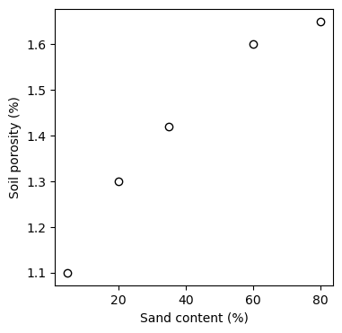

import math
a = 3.0 # value in cm
b = 4.0 # value in cm
hypotenuse = math.sqrt((a**2 + b**2))
print('The hypotenuse is:', round(hypotenuse,2), 'cm')The hypotenuse is: 5.0 cmPython modules, also known as packages or toolboxes, are collections of pre-written Python code that provide additional functionality. Some of these modules are part of the Python standard library, readily available for use without any additional installation. Other modules can be installed separately as needed, expanding the range of functionalities beyond the standard library. Python is a thriving ecosystem with programmers constantly developing new modules. You can find most packages in the Python Package Index (PyPI) repository of software for the Python language.
Modules are imported once, usually at the the top of the code or notebook. throughout more advance exercise in this book you will see a code cell near the top of the code solely dedicated to importing modules.
There are multiple ways of importing Python modules depending on whether you want to import the entire module, assign a shorter alias, or import a specific sub-module. While the examples below could be applied to the same module, I chose to use typical examples that you will encounter for each option.
Option 1
Syntax: import <module>
Example: import math
Use-case: This is the simplest form of importing and is used when you need to access multiple functions or components from a module. It’s commonly used for modules with short names that don’t require an alias. When using this form, you call the module’s components with the module name followed by a dot, e.g., math.sqrt().
import math
a = 3.0 # value in cm
b = 4.0 # value in cm
hypotenuse = math.sqrt((a**2 + b**2))
print('The hypotenuse is:', round(hypotenuse,2), 'cm')The hypotenuse is: 5.0 cmHere is another example using this syntax. With the sys module we can easily check our python version
import sys
print(sys.version) # Useful to check your python version3.10.9 (main, Mar 1 2023, 12:33:47) [Clang 14.0.6 ]Option 2
Syntax: import <module> as <alias>
Example: import numpy as np
Use-case: This is used to import the entire module under a shorter, often more convenient alias. It’s particularly useful for frequently used modules or those with longer names. The alias acts as a shorthand, making the code more concise and easier to write. For instance, you can use np.array() instead of numpy.array().
import numpy as np
# Create an Numpy array of sand content for different soils
sand_content = np.array([5, 20, 35, 60, 80]) # Percentage
print(sand_content)[ 5 20 35 60 80]Option 3
Syntax: import <module>.<submodule> as <alias>
Example: import matplotlib.pyplot as plt Use-case: This approach is used when you only need a specific part or submodule of a larger module. It’s efficient as it only loads the required submodule into memory. The alias is used for ease of reference, as in plt.plot() instead of using matplotlib.pyplot.plot(), which will be much more verbose and will result in cluttered lines of code.
import matplotlib.pyplot as plt
plt.figure(figsize=(4,4))
plt.scatter(sand_content, bulk_density, facecolor='white', edgecolor='black')
plt.xlabel('Sand content (%)')
plt.ylabel('Soil porosity (%)')
plt.show()
Option 4
Syntax: from <module> import <submodule> as <alias>
Example: from numpy import random as rnd Use-case: This method is used when you need only a specific component or function from a module. It’s the most specific and memory-efficient way of importing, as only the required component is loaded. This is useful for modules where only one or a few specific functions are needed, and it allows you to use these functions directly without prefixing them with the module name, such as using rand() instead of numpy.random(). Despite being more memory efficient, this option can lead to conflicts in the variable namespace. This can cause confusion if multiple imported elements share the same name, potentially overwriting each other. Additionally, this approach can obscure the origin of functions or components, reducing code readability.
from numpy import random as rnd
# Set seed for reproducibility (without this you will get different array values)
rnd.seed(0)
# Create a 5 by 5 matrix of random integers between 0 and 9
# The randint function returns
M = rnd.randint(0, 10, [5,5])
print(M)[[5 0 3 3 7]
[9 3 5 2 4]
[7 6 8 8 1]
[6 7 7 8 1]
[5 9 8 9 4]]Use the Python help to access the documentation of the randint() method by running the following command: rnd.randint? Can you see why we had to use a value of 10 for the second argument of the function?